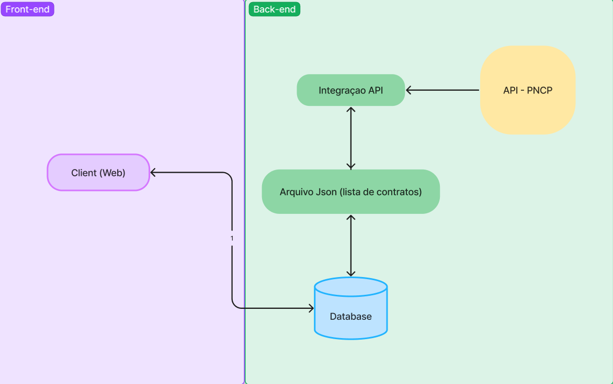

Arquitetura
Introdução
O projeto LicitaNow visa verificar e mostrar aos usuários os gastos públicos do Distrito Federal na modalidade dispensa de licitação. Tendo como objetivo apresentar, de forma organizada, quais empresas recebem mais dinheiro e quais são os órgãos públicos que gastam mais.
Diagrama de arquitetura

Front-End
HTML, CSS e JavaScript:
- Estrutura e Estilo: Para criar a interface inicial do nosso projeto, utilizamos HTML para estruturar o conteúdo e CSS para estilizar os elementos. Além disso, utilizamos JavaScript para adicionar interatividade à página.
- Conteúdo Principal: O HTML define a estrutura básica da página, incluindo cabeçalho, seções de conteúdo, e rodapé. O CSS é responsável pela aparência visual, incluindo cores, espaçamentos, e fontes. O JavaScript adiciona comportamento dinâmico, como animações e reações a eventos de usuário.
Integração com Streamlit:
- Incorporação de HTML/CSS/JS no Streamlit: Utilizamos a biblioteca streamlit.components.v1 para incorporar o nosso código HTML, CSS e JavaScript dentro do aplicativo Streamlit. Isso nos permitiu combinar a flexibilidade do desenvolvimento web tradicional com a simplicidade e o poder do Streamlit.
- Código de Integração: O código abaixo demonstra como carregamos e incorporamos os arquivos HTML, CSS e JavaScript no Streamlit:
import streamlit as st import streamlit.components.v1 as components st.set_page_config(layout="wide") # Função para carregar o conteúdo do arquivo def load_file(file_path): with open(file_path, 'r', encoding='utf-8') as file: return file.read() # Carregar o HTML, CSS e JavaScript html_content = load_file('index.html') css_content = load_file('style.css') js_content = load_file('script.js') # Injetar o CSS e JavaScript no HTML html_with_css_js = f""" <style> html, body, [class*="css"] {{ margin: 0; padding: 0; width: 100%; height: 100%; overflow: hidden; }} {css_content} </style> <div style="width:100vw; height:100vh; overflow: hidden;"> {html_content} </div> <script> {js_content} </script> # Exibir o HTML com CSS e JavaScript no Streamlit components.html(html_with_css_js, height=1000, scrolling=True)
Back-End
Biblioteca Streamlit:
- Criação de Interfaces Interativas: Utilizamos a biblioteca Streamlit para desenvolver o restante da interface do usuário e das funcionalidades interativas. Streamlit é uma ferramenta poderosa para criar dashboards e aplicativos de dados de maneira rápida e eficiente.
- Funcionalidades: Com Streamlit, implementamos funcionalidades como carregamento e visualização de dados, gráficos interativos, e controle de entradas do usuário (como sliders e botões).
Fluxo de Trabalho:
- Entrada de dados: Os dados são carregados a partir de fontes especificadas (arquivos, APIs, etc.).
- Processamento e Análise: Os dados são processados e analisados em tempo real, utilizando bibliotecas de manipulação de dados.
- Visualização: Os resultados são apresentados de forma intuitiva através de gráficos, tabelas e outras visualizações interativas.
Conclusão
A combinação de HTML, CSS e JavaScript para a estrutura e estilo inicial, junto com a biblioteca Streamlit para funcionalidades interativas e visualizações de dados, nos permitiu criar uma aplicação robusta e fácil de usar. Esta abordagem nos permitiu oferecer uma melhor combinação entre: a flexibilidade e personalização do desenvolvimento web tradicional, e a simplicidade e eficiência do Streamlit para análise de dados.